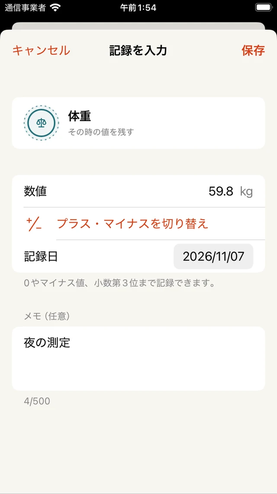

スタンプカウンター
取扱説明書
項目の作り方から、日別の記録やグラフの見方まで。
はじめに
スタンプカウンターは、日々の回数・時間・距離・金額・測定値などを記録するiPhoneアプリです。iOS 17以降に対応し、記録は端末に保存します。
まずは「コーヒー」、単位「杯」、1タップの量「1」で作ってみましょう。ホームでスタンプを押すたびに、今日の記録に1杯加わります。
項目を作る・編集する
ホーム右上の「＋」または「項目を追加」を押します。項目名、単位、スタンプ、カードの色を選び、右上の「保存」を押します。
「足し上げる」は時間・距離・回数などを合計します。「その時の値を残す」は体重や気温などに使い、ホームに最新値を表示します。
足し上げる項目は「固定量をワンタップ」か「毎回入力する」を選べます。自由な単位は1〜12文字、固定量は0.001〜1,000,000で、小数第3位まで入力できます。
編集はカードの「…」→「項目を編集」から。記録がある項目の単位は固定です。1タップの量を変えても、過去の記録は変わりません。
記録・メモ・取り消し
固定量の項目はスタンプを押すと追加されます。毎回入力する項目は「入力」から数値・日付・メモを指定して「保存」を押します。
固定量の項目でも、カードの「…」→「数値・メモを入力」から別の量やメモを記録できます。手入力ではマイナス値と0も使えます。メモは500文字までです。
キーボード上の「完了」はキーボードを閉じる操作です。記録を確定するには、画面右上の「保存」を押します。誤って追加した直後は、ホームの「取り消す」で戻せます。

カレンダーで見る
「カレンダー」タブで、月間の記録と累計を確認できます。日付を押すと、項目ごとの数値や記録に付けたメモが表示されます。
月名を押すと日付を選べます。過去の日を選び、項目の横の「＋」で追加します。固定量の項目は「＋」の長押しでも入力画面を開けます。未来の日付には記録できません。
その日の記録を消すには、日別の一覧にある該当記録の「−」を押します。
集計を読む
「集計」タブで週・月・年を選びます。合計型では期間の合計と1日平均が表示され、記録のない日も平均に含まれます。異なる単位は分けて集計します。
測定値を見るには項目を選びます。グラフは各日・月の最後に記録した値を表示し、平均は期間内に記録したすべての値から計算します。記録していない日は0として扱いません。
保存・広告・ご利用上の注意
記録は端末内に保存されます。アカウント登録は不要で、オフラインでも入力・確認できます。全件を消す場合は「設定」→「すべてのデータを削除」を選びます。削除は取り消せません。
広告はホーム下部のバナーです。広告のプライバシー設定が必要な地域では、アプリの「設定」から選択内容を変更できます。
本アプリは入力値とメモの記録・集計用です。体温や体重の測定、医療上の診断や助言は行いません。